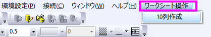

カスタムメニューの作成
カスタムメニューの作成
カスタムメニューオーガナイザを使うと、以下のことが可能です。
- 3つまでのポップアップメニューを作成し、それぞれは複数レベルのメニューをサポートしています。
- LabTalkスクリプトやXファンクションをメニューに割り当てることができます。
- メニュー項目の利用可否を、指定したウィンドウの種類がアクティブなときのインスタンスに制限するとことができます。
- カスタマイズしたメニューは.omcファイルとして他の人と共有することができます。
- どの組込メニューでも非表示にできます。
次の例は、ワークシート操作というメニューを作成する方法を示しています。
- Originのメニューから環境設定：カスタムメニューオーガナイザを選択します。
- メニューから「ファイル：新規作成」を選び、新しいOMCファイルを作成します。
- カスタムメニューの追加パネルの左側の領域で右クリックして、新しいメインポップアップを選びます。右側で、ポップアップテキストのテキストボックスにワークシート操作と入力します。ウィンドウラジオボックスを選び、ワークブックにだけチェックします。これにより、ワークシート操作メニューが、ワークシートがアクティブなときのみ利用できるようになります。
- カスタムメニューの追加パネルの左側の領域のワークシート操作を右クリックし、ショートカットメニューから項目の項目の追加を選びます。カスタムメニューの追加パネルの右側の領域で、次のように入力します。
- ファイル：保存を選択し、.omcファイルとしてパッケージを保存します。ユーザファイルフォルダを開きます。ファイル名をtest.omc とし、OKをクリックします。
- カスタムメニューオーガナイザを終了します。
- メインメニューから環境設定：メニュー：test選択します。ワークシートをアクティブにします。ワークシート操作メニューが現れます。
- 
- ワークシートが10列以下の場合、10列作成というメニューが利用できます。それを選択します。ワークシートは10列になります。
|
システムフォルダ、ユーザファイルフォルダ、グループフォルダにあるすべての.omcファイルが、環境設定：メニューに表示されます。それらのいずれか1つを選択して、カスタマイズしたメニューをアクティブにします。
|
 | - 環境設定メニューを非表示にして、メニューからカスタムメニューオーダイアログを開けない場合、スクリプトウィンドウまたはコマンドウィンドウでcustomMenu と入力して、カスタムメニューオーガナイザダイアログを開くことができます。
- Windowsエクスプローラから.omcファイルをOriginのワークスペースにドラッグ&ドロップして開くこともできます。また、.omcファイルをシステムフォルダ、ユーザファイルフォルダ、グループフォルダに直接置くこともできます。
- スタートメニューを非表示にし、関連するF1検索機能を無効にするには、LabTalkシステム変数@DSB=1を設定します。
|